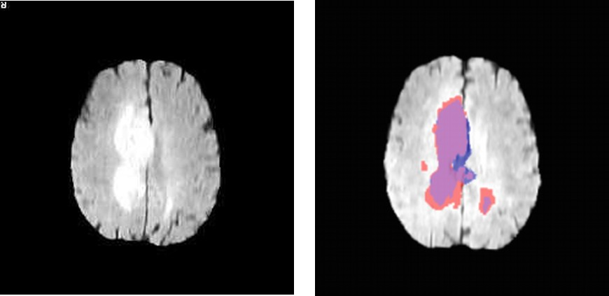
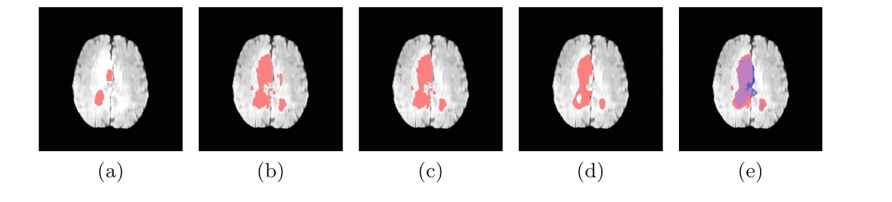

Lecture 1, part A — motivation. Not in the exam programme.
Programming Languages Lab · University of Pisa
Vincenzo Ciancia, CNR-ISTI
You already know how to write a program.
So why would anyone build a language instead of just writing the program?
A little history, older than computers. Then one real case.
Chomsky, 1956–1959. A language is a set of strings; a grammar is a finite device that generates it. Regular, context-free, context-sensitive, unrestricted: each level has its own machine.
He was studying English. One year after Syntactic Structures, the ALGOL 60 report defined a programming language with a context-free grammar.
Every parser you will write in this course descends from that idea.
Colorless green ideas sleep furiously.
— Chomsky, 1957
Grammatically perfect. Meaningless.
A grammar says which sentences exist. It does not say what they mean.
The grammar takes one lecture. The meaning takes the rest of the course.
What's in a name? That which we call a rose
by any other name would smell as sweet.
— Romeo and Juliet
Semantics is the art of giving meaning to symbols — and of making sure that two people, or a person and a machine, mean the same thing by them.
For thirty years "artificial intelligence" meant writing knowledge in a language: LISP (1958), Prolog (1972), expert systems. MYCIN chose antibiotics from about 600 rules — and could show the rules behind each answer.
Readable, checkable, laborious. Machine learning makes the opposite trade: nobody writes the rules, nobody can read them.
This is not an AI course. It teaches the other half: how to design the language in which something can be written down, read, and checked.
One real case

Before radiotherapy, someone draws the tumour on the scan: which voxels are tumour, which are not.
A human does it, slice by slice. Slow, tiring, and different experts draw different boundaries.
A yearly challenge since 2012. In 2017: about 50 papers, essentially all machine learning, some excellent.
Not used in clinical workflows. Why?
None of these is about accuracy. All are about a person reading the procedure.
let brain = !touch(flair <. 0.1, border)
let pflair = percentiles(flair, brain, 0.5)
let hyperIntense = flt(5.0, pflair >. 0.95)
let veryIntense = flt(2.0, pflair >. 0.86)
let tumour = grow(hyperIntense, veryIntense)
The brain is what does not touch the border. The tumour is the brightest 5%, grown into the brightest 14% around it.
A radiologist can read that — and disagree with it. You cannot disagree with a weight matrix.
VoxLogicA — Belmonte, Ciancia, Latella, Massink, TACAS 2019
Not for, while, array. Instead:
touch · grow · near · percentiles · distance from · largest connected component
The operations of the domain, promoted to primitives of the language. That is what makes it a domain-specific language rather than a library with a fancy name.
Choosing those words took years. Implementing them took much less.

About 200 cases: accuracy in line with the state of the art, 5–10 seconds per 3D image on a desktop, and the procedure is a page of readable text. Then reused for skin lesions, white and grey matter, video streams, 3D meshes.
The program solves one problem. The language solves the ones you had not thought of yet.
How this language actually works is a lecture of its own, at the end of the course, when you have built interpreters yourselves:
Today you only need the moral.
A domain-specific language is how a person keeps hold of an automatic system: a small, readable, inspectable, re-runnable vocabulary that someone designed on purpose.
True whoever — or whatever — writes the programs. An assistant that writes in a vocabulary you chose is one you can check. This is a position, not a theorem: argue with it.
An interpreter for a small language is, today, a couple of hours of work with an assistant. Writing it is no longer the hard part — you are expected to use those tools.
What does not get cheaper:
Part B: what a language is made of. Forty lines of Python.